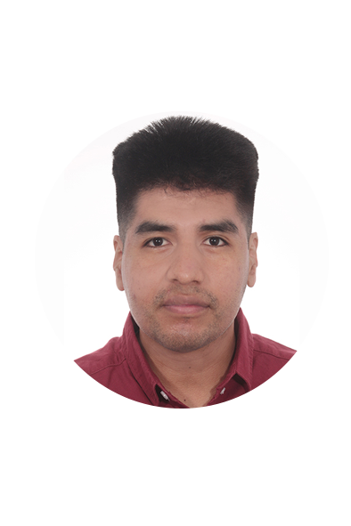

David Rojas Cruz
Especialista en Sistemas y entusiasta de la Inteligencia Artificial.
Información de contacto
Email: davidrojascruz0@gmail.com
GitHub: drojas-7u7
Linkedin: David Rojas Cruz
Sobre mí
Técnico en sistemas de telecomunicaciones e informáticos
con experiencia en reparación de móviles, redes, ciberseguridad,
soporte técnico y automatización de pruebas. Actualmente me encuentro
especializándome en Inteligencia Artificial.
Experiencia Laboral
-
Técnico de Soporte y Provisión - Likes Telecom
(Junio 2025 - Agosto 2025)
-
Técnico Testing Engineer - Alter Technology
(Julio 2022 - Febrero 2025)
-
Técnico de Explotación y Soporte - IRIUM Soluciones
(Febrero 2022 - Junio 2022)
Formación Académica
Técnico Especialista en Dispositivos Móviles
Fundación Tomillo | Nov 2025 - Marzo 2026 (En curso)
Grado Superior en Sistemas de Telecomunicaciones e Informáticos
IES Benjamín Rúa | 2019 - 2021
Idiomas
- Español: nativo
- Inglés: intermedio
Habilidades Técnicas
- Diagnóstico y reparación de electrónica
- Redes y servicios TI
- Ciberseguridad básica
- Soporte y configuración de sistemas
Habilidades Personales
- Aprendizaje rápido y adaptación
- Resolución de problemas
- Trabajo en equipo
Certificaciones
- CCNA Routing and Switching: Principios Básicos – IES Benjamín Rúa (2021, 70 horas).
- CCNA Routing and Switching: Introducción a Redes – IES Benjamín Rúa (2021, 70 horas).
- Técnico en Ciberseguridad – Fundación Altius (2019, 160 horas).
- Seguridad Informática y Firma Digital – Grupo Atu (2019, 50 horas).
Otros Datos de Interés
- Carnet de conducir B (sin vehículo propio)
- Disponibilidad para trabajo remoto, viajes y cambio de residencia
- Autorización para trabajar en la Unión Europea